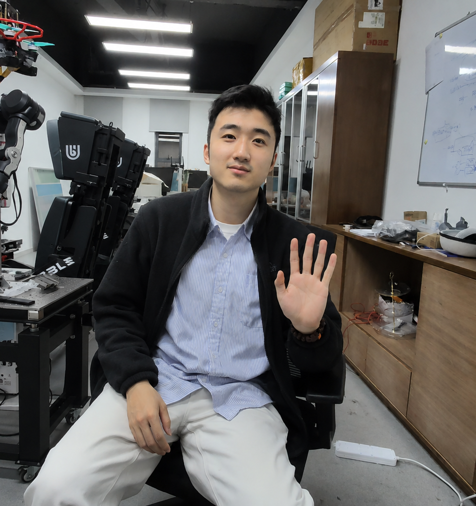
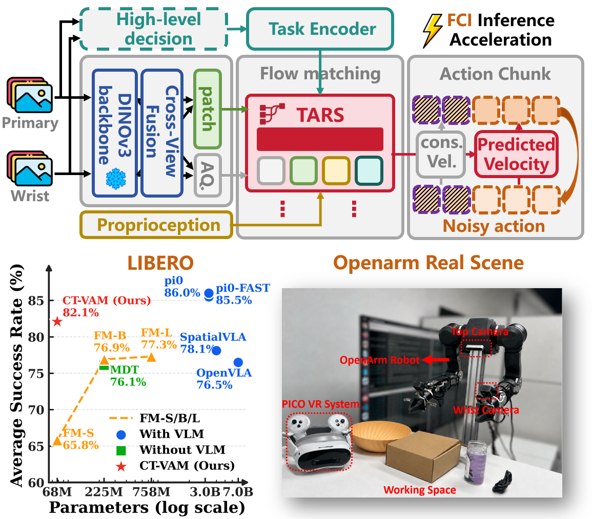

郭一泽 | Yize Guo
|
 |
我是中国科学技术大学信息科学技术学院 2026 届人工智能硕士研究生，师从秦家虎教授。 我的研究主要围绕具身智能、Vision-Language-Action 模型、模仿学习、机器人运动规划与强化学习展开。 我比较关心的问题不仅仅是单一模型指标，而是如何把训练策略、模型架构和真实机器人系统部署串成一个完整闭环。 因此，除了算法设计，我也持续参与双臂平台搭建、底层控制、遥操作数据优化增广、训练管线构建以及实机推理部署。 目前的工作重点包括：多任务 VLA 训练与后训练、基于 flow matching 的模仿学习、多任务策略切换与深度信息对齐、 Franka 机械臂的可控接触运动规划，以及四足机器人强化学习与 sim2real 部署。
研究兴趣：具身智能、VLA / 模仿学习、机器人规划与控制、强化学习与真实系统部署。 |
| 近况 |
- [2026.05] 完成 CT-VAM 研究，作为我们分层 VLA 大框架中的“小脑”部分，负责承接高层任务意图与低层视觉运动控制；已投 CoRL2026，近期将开源并挂在 arXiv上。
- [2026.05] 在 AGIBOT WORLD CHALLENGE 2026 @ ICRA 智元具身智能挑战赛中取得前十名（10/79），围绕多任务 VLA 训练、Multi-LoRA、深度信息对齐和数据飞轮完成系统优化。🎆🎆
- [2026.05] 论文 DG-ACMP: Deformation-Guided Motion Planning With Acceptable Contacts for Manipulators in Cluttered Environments 发表于 IEEE Robotics and Automation Letters。
- [2025.09 - 至今] 持续开展基于 flow matching 的模仿学习多模态约束研究，关注顺序约束任务中的模态可控性。
| 科研与项目 |
|
2026.03 - 2026.05

|
AGIBOT WORLD CHALLENGE 2026 @ ICRA 智元具身智能挑战赛 VLA 多任务训练 / 深度信息对齐 / Multi-LoRA / RL 后训练 / 数据飞轮 面向十类涵盖长程与精细操作的真实机器人任务，基于 ACOT-VLA 搭建多任务训练与后训练框架。
|
|
2026.01 - 2026.05
 |
CT-VAM：面向高效视觉运动控制的轻量机器人策略模型（CoRL 2026 在投） 提出受小脑 - 丘脑机制启发的视觉 - 动作模型，将高层任务意图和低层高频视觉反馈控制解耦，用于轻量化闭环机器人操作。
|
|
2024.08 - 2025.08
|
DG-ACMP：障碍物密集环境下面向可控接触的机械臂运动规划（IEEE RA-L 2026） 研究拥挤 / 可变形环境中的机械臂运动规划，允许“安全、可控”的接触以提升可达性和任务成功率。
|
| 2025.09 - 至今 |
基于 flow matching 的模仿学习多模态约束研究 研究主流 flow matching 模型在顺序约束任务中的模态不可控与计算效率问题。
|
| 2024.02 - 2024.07 |
四足机器人欠驱动载荷自适应行走与载荷稳定控制 强化学习 / sim2real / Unitree Go2 围绕欠驱动载荷场景下的稳定运动控制，设计双估计器与非对称 Actor-Critic 结构，并完成零样本实机部署。
|
| 实习经历 |
| 2022.10 - 2023.04 |
科大讯飞数码研究院 · 研究算法实习生 主要参与端到端语音识别降噪适配优化与流式语音识别热词增强框架搭建。
|
| 技术能力 |
模型与学习
- VLA / 模仿学习训练策略、模型架构改进与实机部署经验。
- 具备 spatial-forcing、DSRL、Multi-LoRA、RL 后训练等实操经验。
- 掌握 DQN、PPO 等强化学习方法，具备四足机器人策略训练和迁移部署经历。
机器人系统与规控
- 具身机器人系统全栈落地经验，包括双臂硬件搭建、底层控制、遥操作数采、训练与实机推理。
- 熟悉 IK、重力补偿、机器人运动学与动力学，具备 Franka 机械臂实机部署经验。
- 掌握 LQR、iLQR / DDP、MPC、GPMP，以及 A*、RRT、Dijkstra 等规划算法。
| 教育与荣誉 |